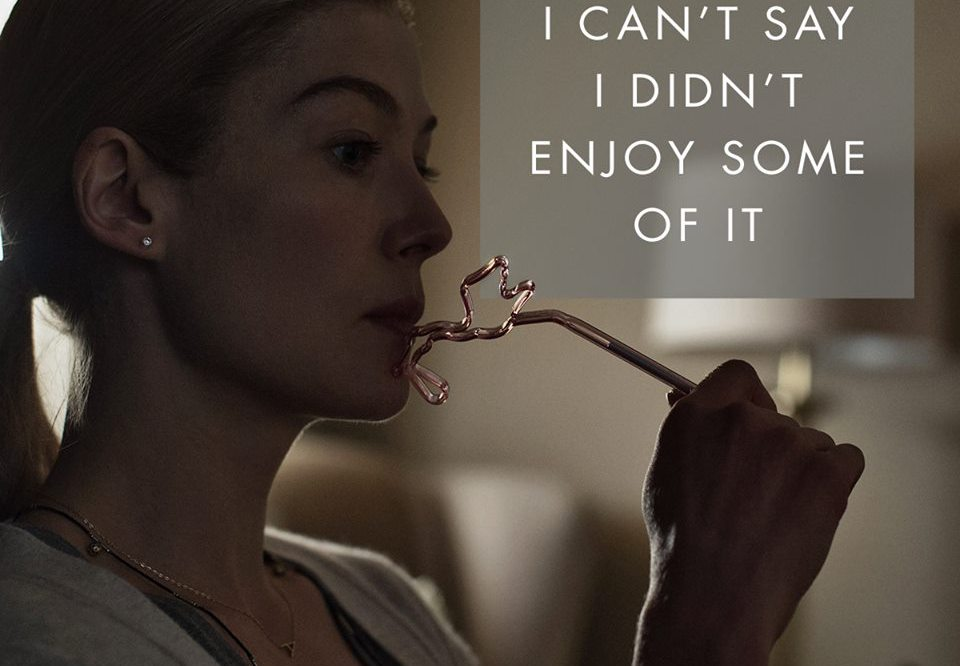

On the morning of their fifth anniversary, Nick Dunne's wife, Amy, disappears from their North Carthage, Missouri home. A few years before, they moved there from New York to take care of Nick's mother, who was dying of cancer. Amy, a New Yorker by birth, wasn't too thrilled about this and even felt that she was being taken there against her will. Their marriage hasn't exactly been an all-American love story, but as tough as things have been, it's about to get worse. By the end of the day, cops and news crews have invaded Nick's house, detectives have grilled Nick into exhaustion, and Amy's helicopter parents have swept in from New York to facilitate the search. As the days pass with no sign of Amy—other than the clues for her annual anniversary treasure hunt—the case's widespread media attention and the general public's outrage place the police under extreme pressure to find a suspect. Unfortunately for Nick, they're closing in on him. Because he's our main character, we want to believe Nick didn't do it. In spite of this, the mounting evidence against him, especially his ongoing affair with a much younger woman and the details he withholds about the morning Amy disappeared, can't be ignored.
The one reasonable doubt comes from the treasure hunt, a trail of clues that lead Nick to important places in their relationship before finally arriving at his anniversary present. In spite of their ongoing marital problems, Nick finds himself falling in love with Amy as he reads the love notes she leaves at each location, feeling wooed back to her although it seems too late. The investigation of her disappearance isn't the only thread in this story, however. Part One is also punctuated with excerpts from Amy's personal diary, giving us a glimpse of her witty—but high-strung—only child personality. Through these entries, Amy reveals how her and Nick's seemingly charmed romance began to deteriorate. While they were once magazine writers in New York, both lost their jobs before the allegedly temporary move to Missouri. In spite of Amy's objections, though, they seem to be stuck there permanently, even after his mother's death. Nick has opened a bar with his twin sister, gotten a job at the community college, and is growing distant, possessive, and violent. Amy's diary reveals a woman who is never sure where she stands with her husband and is scared enough to try to buy a gun.


Meanwhile, back at the Dunne Ranch, Nick's hired a high-powered New York celebrity attorney and is trying to cover his butt, though it's not going well. The media and the cops have turned against him, and even Amy's parents have declared him persona non grata. Nick attempts a few public relations events, even taping an interview for a prime time network news show, but nothing seems to be working, especially after news of the woodshed's contents leaks; the discovery of Amy's (fake) pregnancy doesn't help either. Eventually Nick is arrested for murder. Having been robbed of all the money she has in the world, Amy only has one option left: get help from her old high school boyfriend, Desi, who happens to be obsessed with her. After a covert meeting at a casino, Desi takes her home, where he basically holds her hostage for a few weeks. It's only when Amy sees one of Nick's high-profile interviews on television and hears him beg her to come home that she decides it's time to give up the ruse. So she has sex with Desi, kills him, beats herself up, and returns home with a bizarre story about being abused, raped, and held captive in his house. Looks like Nick's off the hook and Desi's name is officially dirt.
Meanwhile, back at the Dunne Ranch, Nick's hired a high-powered New York celebrity attorney and is trying to cover his butt, though it's not going well. The media and the cops have turned against him, and even Amy's parents have declared him persona non grata. Nick attempts a few public relations events, even taping an interview for a prime time network news show, but nothing seems to be working, especially after news of the woodshed's contents leaks; the discovery of Amy's (fake) pregnancy doesn't help either. Eventually Nick is arrested for murder. Having been robbed of all the money she has in the world, Amy only has one option left: get help from her old high school boyfriend, Desi, who happens to be obsessed with her. After a covert meeting at a casino, Desi takes her home, where he basically holds her hostage for a few weeks. It's only when Amy sees one of Nick's high-profile interviews on television and hears him beg her to come home that she decides it's time to give up the ruse. So she has sex with Desi, kills him, beats herself up, and returns home with a bizarre story about being abused, raped, and held captive in his house. Looks like Nick's off the hook and Desi's name is officially dirt.


Now that Amy's back home, the charges against Nick are dropped, but instead of doing something crazy like, say, getting a divorce, instead Nick and Amy—who totally hate each other's guts—transform their home into a mini, modern day Cold War. If Nick doesn't cooperate with her kidnapping story, Amy will tell the press that he tried to poison her with antifreeze (something she went so far as to do to herself, so she has vomit saved in the freezer to prove her claim if need be). In spite of this, Amy kind of killed a dude and Nick doesn't like living with that. So, as frustrated writers, they do the only thing they know how to do: they write dueling memoirs. Amy, though, has yet another surprise for Nick once he finishes his tell-all, Amy insanity book: she's pregnant (for real this time), and demands that he play by her rules if he wants to see his child. Having grown up with an abusive father, Nick knows the horror the kid will be subjected to having Amy as the sole provider, so feels he has no choice but to delete his book and resign himself to being the husband he knows he should have been all along.
Flynn was born in Kansas City, Missouri and raised in midtown Kansas City's Coleman Highlands neighborhood. Both of her parents were professors at Metropolitan Community College–Penn Valley: her mother, Judith Ann (née Schieber), was a reading-comprehension professor, and her father, Edwin Matthew Flynn, was a film professor. She has an older brother, Travis, who is a railroad machinist. Her uncle is Jackson County Circuit Court Judge Robert Schieber. Flynn was "painfully shy" and found escape in reading and writing. When she was growing up, Flynn's father would take her to watch horror movies. Flynn attended Bishop Miege High School and graduated in 1989. As a teenager, she worked odd jobs which required her to do things such as dress up as a giant "yogurt cone who wore a tuxedo."